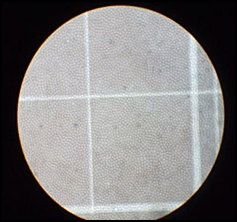

Blood + Normal Saline Solution

Details
Normal Saline 0.9% is called an isotonic solution. A 0.0% saline solution is called a
Hypotonic solution. A solution of this concentration would cause water to diffuse into
the red blood cells and cause them to lyse and burst open. A 10% saline solution is
called a hypertonic solution. This solution concentration would cause water to diffuse
out of the red blood cells making them shrivle up and shrink.
Back